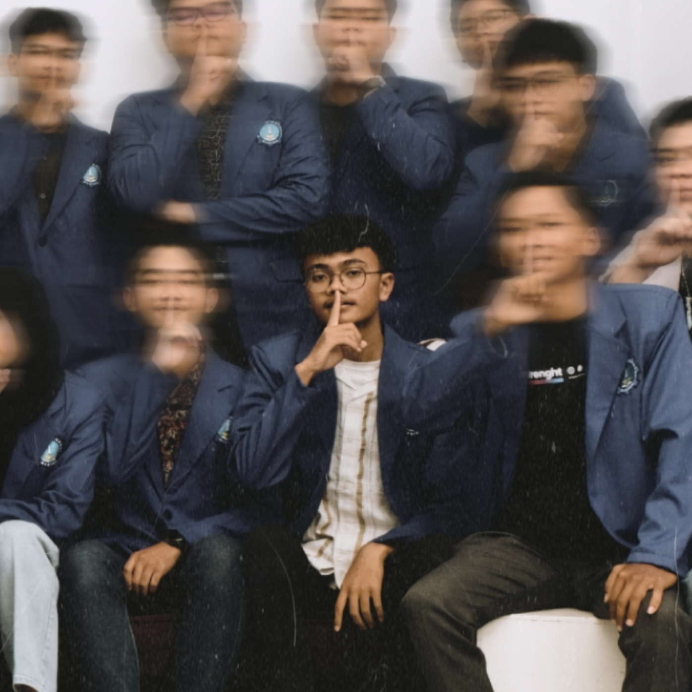

Abyan Raga Kusuma
Politeknik Negeri Madiun
Sebagai mahasiswa TRPL di Politeknik Negeri Madiun, saya dengan bangga telah menciptakan halaman website ini. Meskipun menantang, proses pembuatannya memungkinkan saya menerapkan pengetahuan dan keterampilan yang saya pelajari di kampus ke dalam dunia nyata.